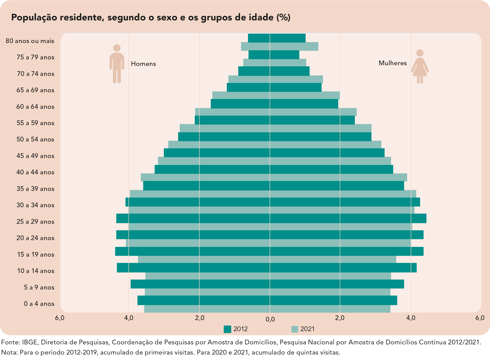
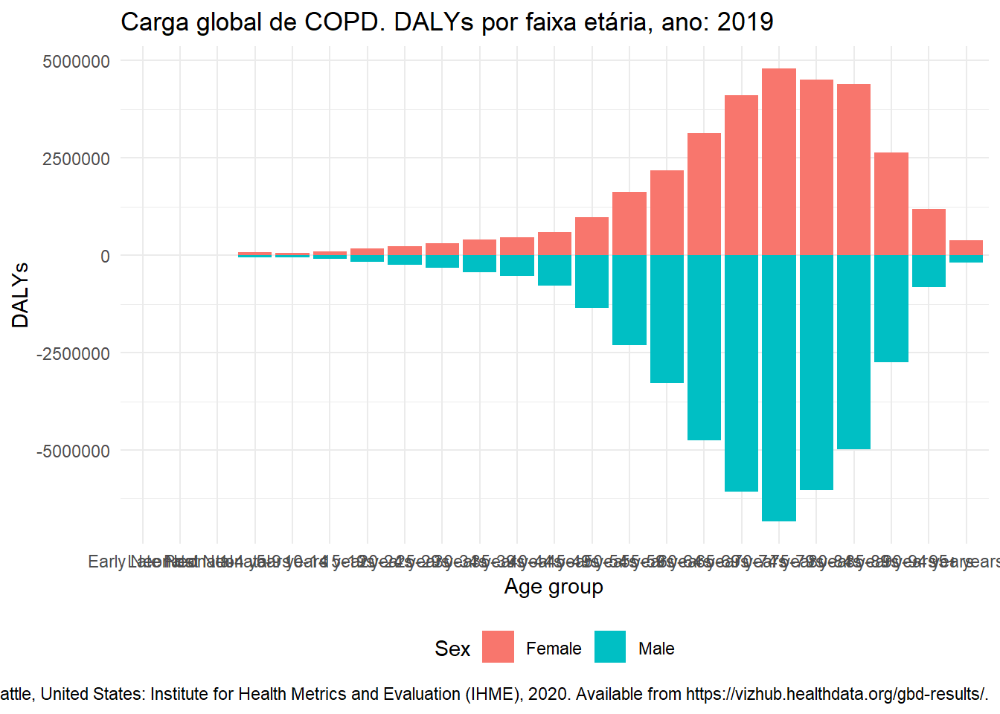
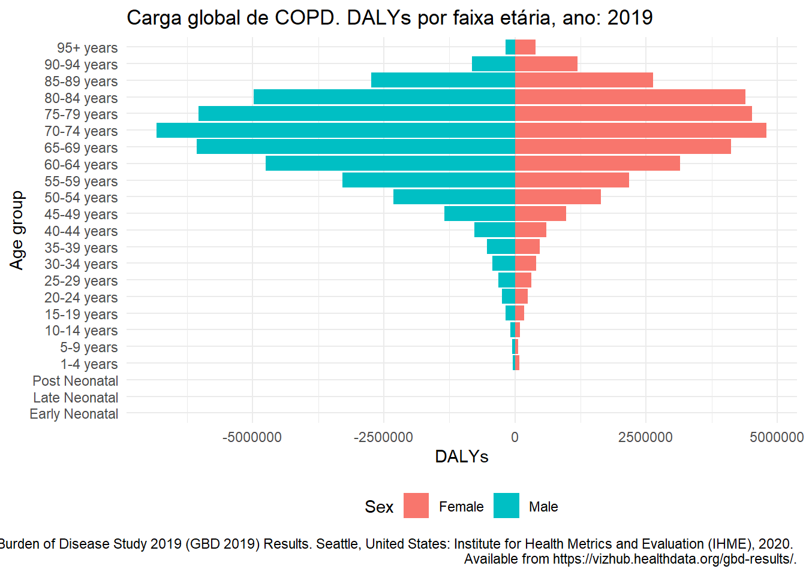
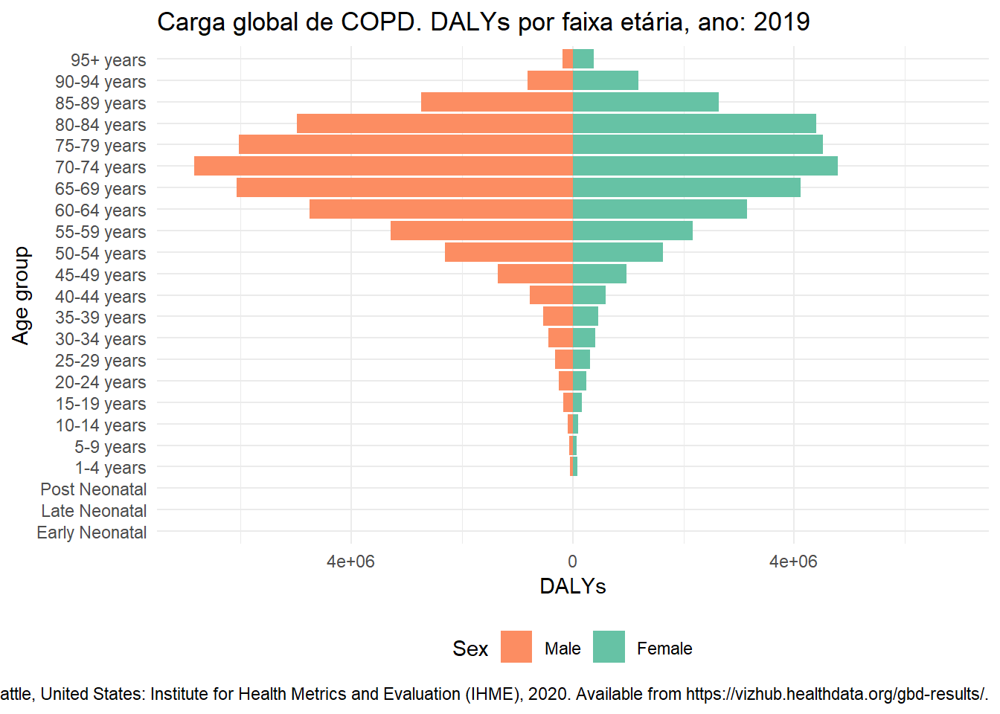
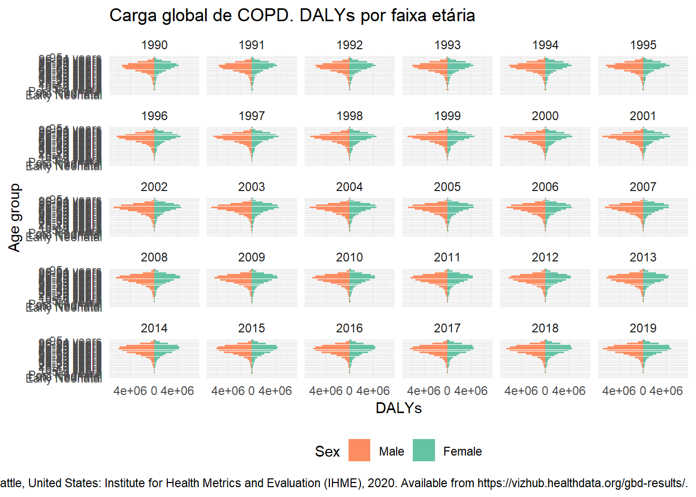
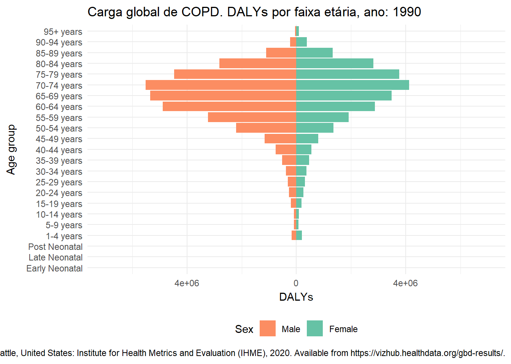

No último post discutimos a construção de gráficos para apresentação da carga de doença pulmonar obstrutiva crônica (chronic obstructive pulmonary disease, COPD). Utilizamos gráficos de barras para descrever a distribuição de DALYs por faixa etária. Neste novo post continuaremos a discutir este exemplo, apresentando um gráfico de pirâmide como alternativa aos gráficos de barras simples.
O gráfico de pirâmide é um gráfico muito utilizado para apresentar a distribuição etária de uma população por gênero.

É um gráfico bastante útil para se fazer comparações entre anos/períodos e avaliar mudanças no padrão etário de uma população ao longo do tempo. Vamos construir este gráfico para apresentar a distribuição de DALYs de COPD global por idade e gênero.
Mais uma vez, utilizamos a ferramenta GBD Results Tool do Global Health Data Exchange do GBD 2019 para obter os dados sobre a carga global de COPD. Para este exemplo, a seguinte configuração foi especificada:
Global Burden of Disease Study 2019 (GBD 2019) Results. Seattle, United States: Institute for Health Metrics and Evaluation (IHME), 2020. Available from https://vizhub.healthdata.org/gbd-results/.
Uma vez que baixamos os dados, vamos carregá-los para o R.
library(readr)
gbd_copd <- read_csv(file = here::here("data",
"IHME-GBD_2019_DATA-4fea7ca1-1.csv"))De acordo com a configuração da nossa consulta (no GBD Results Tool) temos informação para valores de DALYs, em ambos os sexos e para cada ano de 1990 até 2019.
gbd_copd## # A tibble: 1,380 × 10
## measure locat…¹ sex age cause metric year val upper lower
## <chr> <chr> <chr> <chr> <chr> <chr> <dbl> <dbl> <dbl> <dbl>
## 1 DALYs (Disabilit… Global Male 0-6 … Chro… Number 1990 0 0 0
## 2 DALYs (Disabilit… Global Fema… 0-6 … Chro… Number 1990 0 0 0
## 3 DALYs (Disabilit… Global Male 7-27… Chro… Number 1990 0 0 0
## 4 DALYs (Disabilit… Global Fema… 7-27… Chro… Number 1990 0 0 0
## 5 DALYs (Disabilit… Global Male 28-3… Chro… Number 1990 5.99e2 7.42e2 4.32e2
## 6 DALYs (Disabilit… Global Fema… 28-3… Chro… Number 1990 6.80e2 8.43e2 5.00e2
## 7 DALYs (Disabilit… Global Male 1-4 … Chro… Number 1990 1.66e5 3.77e5 1.17e5
## 8 DALYs (Disabilit… Global Fema… 1-4 … Chro… Number 1990 2.01e5 3.51e5 6.55e4
## 9 DALYs (Disabilit… Global Male 5-9 … Chro… Number 1990 8.36e4 1.00e5 7.04e4
## 10 DALYs (Disabilit… Global Fema… 5-9 … Chro… Number 1990 8.30e4 1.03e5 6.13e4
## # … with 1,370 more rows, and abbreviated variable name ¹locationComo no gráfico de barras simples, vamos formatar os dados antes de gerar o gráfico.
gbd_copd$age <- factor(
x = gbd_copd$age,
levels = unique(gbd_copd$age),
labels = c(
c("Early Neonatal", "Late Neonatal", "Post Neonatal"),
unique(gbd_copd$age)[4:19],
paste(unique(gbd_copd$age)[20:22], "years"),
unique(gbd_copd$age)[23]
)
)Para produzir um gráfico de pirâmide, em que as barras horizontais têm a origem no valor zero do eixo \(x\) e sentidos opostos para cada nível da variável sex (da esquerda para direita para DALYs do sexo feminino e da direita para esquerda para DALYs do sexo masculino), precisamos multiplicar os valores de DALYs para o sexo masculino por \(-1\).
gbd_copd$val[gbd_copd$sex == "Male"] <-
-gbd_copd$val[gbd_copd$sex == "Male"]Vamos filtrar os dados referentes ao ano de 2019 utilizando a função filter do pacote dplyr1.
library(dplyr)
gbd_copd_19 <- gbd_copd %>%
filter (year == 2019)Agora, vamos utilizar o pacote ggplot2 para construir o gráfico de pirâmide. O primeiro passo é construir um gráfico de barras.
library(ggplot2)
p <- ggplot(data = gbd_copd_19,
mapping = aes(x = age,
y = val,
fill = sex)) +
geom_bar(stat = "identity") +
labs(x = "Age group", y = "DALYs", fill = "Sex",
title = "Carga global de COPD. DALYs por faixa etária, ano: 2019",
caption = "Global Burden of Disease Study 2019 (GBD 2019) Results. Seattle, United States: Institute for Health Metrics and Evaluation (IHME), 2020. Available from https://vizhub.healthdata.org/gbd-results/.") +
theme_minimal() +
theme(legend.position = "bottom")
p
Note que o gráfico gerado se parece muito com o resultado esperado, porém as barras estão na posição vertical e os valores de DALYs para o sexo masculino são mostrados com o sinal negativo. Vamos utilizar a função coord_flip para inverter os eixos do gráfico.
p <- ggplot(data = gbd_copd_19,
mapping = aes(x = age,
y = val,
fill = sex)) +
geom_bar(stat = "identity") +
labs(x = "Age group", y = "DALYs", fill = "Sex",
title = "Carga global de COPD. DALYs por faixa etária, ano: 2019",
caption = "Global Burden of Disease Study 2019 (GBD 2019) Results. Seattle, United States: Institute for Health Metrics and Evaluation (IHME), 2020.
Available from https://vizhub.healthdata.org/gbd-results/.") +
theme_minimal() +
theme(legend.position = "bottom") +
coord_flip()
p
Ainda, podemos modificar a paleta de cores e formatar os labels do eixo horizontal.
library(RColorBrewer)
p <- ggplot(data = gbd_copd_19,
mapping = aes(x = age,
y = val,
fill = sex)) +
geom_bar(stat = "identity") +
scale_y_continuous(labels = abs,
limits =
max(max(gbd_copd_19$val, na.rm = TRUE),
abs(min(gbd_copd_19$val))) * c(-1,1)) +
scale_fill_brewer(palette = "Set2") +
guides(fill = guide_legend(reverse = TRUE)) +
labs(x = "Age group", y = "DALYs", fill = "Sex",
title = "Carga global de COPD. DALYs por faixa etária, ano: 2019",
caption = "Global Burden of Disease Study 2019 (GBD 2019) Results. Seattle, United States: Institute for Health Metrics and Evaluation (IHME), 2020. Available from https://vizhub.healthdata.org/gbd-results/.") +
theme_minimal() +
theme(legend.position = "bottom") +
coord_flip()
p
Para gerar o gráfico da distribuição de DALYs de COPD global por faixa etária e sexo entre os anos de 1990 e 2019, podemos utilizar o mesmo código apresentado na seção anterior com o objeto de dados original (gbd_copd) e a função facet_wrap com a variável year.
p <- ggplot(data = gbd_copd,
mapping = aes(x = age,
y = val,
fill = sex)) +
geom_bar(stat = "identity") +
scale_y_continuous(labels = abs,
limits =
max(max(gbd_copd$val, na.rm = TRUE),
abs(min(gbd_copd$val))) * c(-1, 1)) +
scale_fill_brewer(palette = "Set2") +
guides(fill = guide_legend(reverse = TRUE)) +
labs(
x = "Age group",
y = "DALYs",
fill = "Sex",
title = "Carga global de COPD. DALYs por faixa etária",
caption = "Global Burden of Disease Study 2019 (GBD 2019) Results. Seattle, United States: Institute for Health Metrics and Evaluation (IHME), 2020. Available from https://vizhub.healthdata.org/gbd-results/.") +
theme_minimal() +
theme(legend.position = "bottom") +
coord_flip()
p + facet_wrap(~ year)
Uma forma mais dinâmica para acompanharmos as mudanças no gráfico ao longo do tempo pode ser obtida através de uma animação. O pacote gganimate possui funções que aproveitam o código do gráfico ggplot2.
library(gganimate)
p <- ggplot(data = gbd_copd,
mapping = aes(x = age,
y = val,
fill = sex)) +
geom_bar(stat = "identity") +
scale_y_continuous(labels = abs,
limits =
max(max(gbd_copd$val, na.rm = TRUE),
abs(min(gbd_copd$val))) * c(-1,1)) +
scale_fill_brewer(palette = "Set2") +
guides(fill = guide_legend(reverse = TRUE)) +
labs(x = "Age group", y = "DALYs", fill = "Sex",
title = "Carga global de COPD. DALYs por faixa etária, ano: {as.integer(frame_time)}",
caption = "Global Burden of Disease Study 2019 (GBD 2019) Results. Seattle, United States: Institute for Health Metrics and Evaluation (IHME), 2020. Available from https://vizhub.healthdata.org/gbd-results/.") +
theme_minimal() +
theme(legend.position = "bottom") +
coord_flip()
p + transition_time(year) +
ease_aes('linear')
Lembre que para obtermos o gráfico dinâmico necessitamos de um ambiente que permita o resultado dinâmico, como o ambiente html.
Para uma introdução ao operador pipe (%>%), veja: https://magrittr.tidyverse.org/reference/pipe.html↩︎